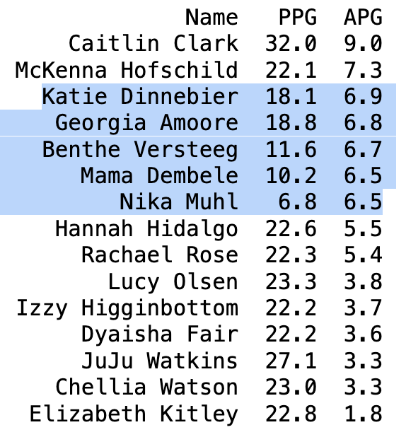
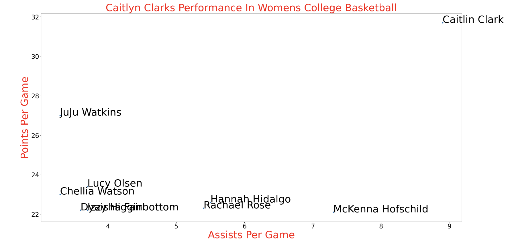

Many Consider Caitlyn Clark who is currently a guard for the Iowa
Hawkeyes womens basketball team to be the greatest player ever in
womens college basketball thus far. But with every great thing theres
always the bad. With her fans there are also critics who think because
Caitlyn Clark currently leads D1 womens basketball in scoring that she
is considered a "ball-hog" which indicates she never passes the ball
to her teammates. This project will compare Caitlyn Clark and other
women basketball players in division 1 in scoring and assists so far
this year. As I compare the scoring to assists ratio I will want to
prove that she is not a "ball-hog" and indeed passes the ball to her
teammates and still is efficient herself with her scoring
capabilities.
Problem: Prove that Caitlyn Clark is not indeed a "ball-hog" but an
efficient scorer and passer
Visit GitHub Code!
1.) First Proof
2.) Second Proof
I used webscraping to scrape the top 10 points per game scorers in womens college basketball as well as all 250 players in the 'Assists per game' category
Link to Site
BeautifulSoup: Webscraping NCAA site for data needed
Pandas: Data manipulation and putting together data into dataframes
Matplotlib: Data visualizations
Jupyter Notebook: Notebook containing all python code in one place for
development
The data cleaning process was simple. I did not have to do any excessive cleaning of the data due to it being clean ready already. I only stripped the text needed from each row of data needed for analysis.
This was a learning process on webscraping data from websites for the first time. I had some trouble plotting two variables due to type-error issues. I later found that when plotting two numerical variables that I need to convert them from a string to numbers using the "to_numeric()" function. For the future now I know this needs to be done before plotting to avoid this error.